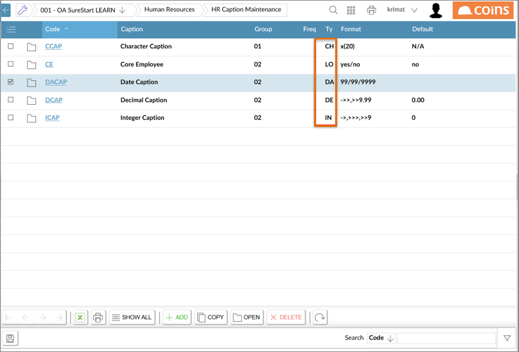
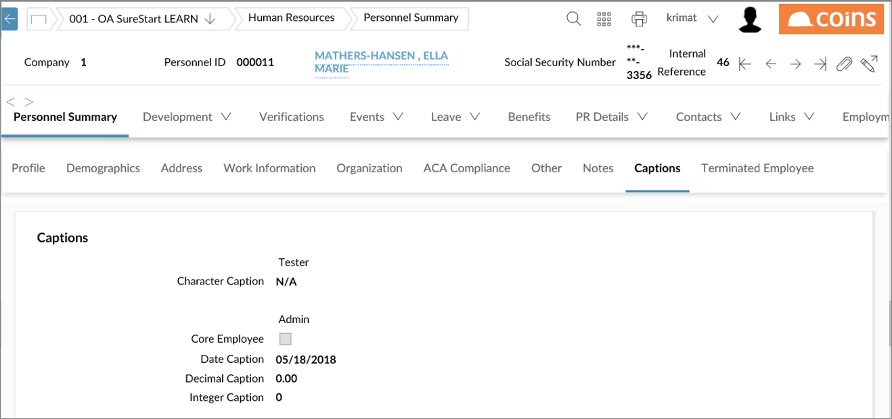
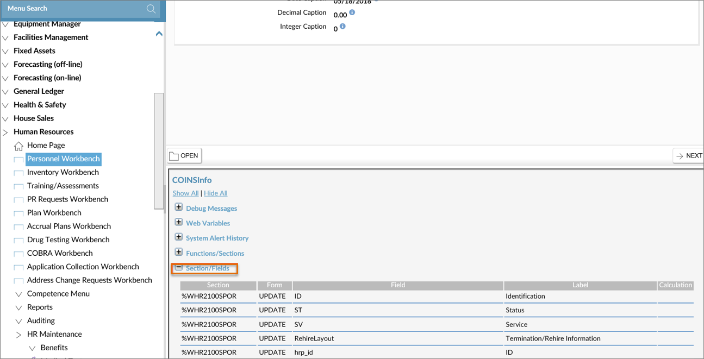
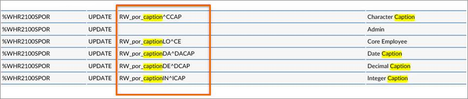

Personnel Data Load allows you to load HR personnel data from an input file.
The first line of the file should give the database table to be populated.
Possible values are:
The second line can optionally be a comma-separated list of field/value pairs that applies to all records to be created/updated.
For example, to load just salary history data, you could begin the file with:
pp_events
ppe_type=HRSAL
The next line should be a comma-separated list of fields for the table data to be loaded. This list - together with any field/value pairs for the whole file - must include a key to identify individual records.
For pp_organisation records, this can be either:
For all the other tables, the ppo_seq field must be included, but the values for this can be either the sequence number, the NI/PPS/Social Security number, the HR ID, or the person's name.
Note that when creating a bulk
The subsequent lines in the load file should each contain a comma separated list of values for these fields (one line per database record). If the key field values provided match a single existing database record, the load routine attempts to update this record. If the key values do not match a record, a new record is created for the data. If they match multiple records, you receive an error message for the line.
For any field which is held in the database as a code or sequence number, but is ordinarily displayed as an associated description (for example, fields which use lookup codes), the value in the load file can be either the code or the description. The only exception to this is the ppo_seq field for the pp_organisation table, since other fields in this table may be used to identify an existing record.
The file below could load paid
pp_orgtime
pph_type=HOLBULK,pph_payable=yes,pph_reason=HOLENT
ppo_seq,pph_date,pph_to,pph_authby
John Smith,23/07/2007,03/08/2007,Sarah West
Peter Jones,22/08/2007,31/08/2007,Sarah West
For information on how to set up tables to have extra fields, refer to the document entitled "SY-HT007: How to Create, Use, and Maintain User Defined Data at http://support.coins-global.com/usa/coins-oa/howtos-oa/SY/SY-HT007_CreateMaintainUserDefData.pdf, which is found on the US Client Area website (a User ID and password is required to access this area).
Example 1: Loading the extra field cex_cha__5 in the Personnel table is shown in the example below, where the cex_type is set to the table and the cex_key* fields are set to the key for the table - in this case, the value of the ppo_seq field:
co_extra
kco,cex_type,cex_key1,cex_cha__5
0,pp_organisation,2153,Thing 1
0,pp_organisation,3085,Thing 2
Example 2: Loading extra fields against the Contacts table (spouse,
co_extra
kco,cex_type,cex_key1,cex_key2,cex_key3,cex_key4,cex_key5,cex_key6,cex_cha__1
0,pp_orgtypes,2153,CON,Goering,Robert ,Edward,Jr,goeringre@yahoo.com
0,pp_orgtypes,3085,CON,Ford,Jonathan,James,Jr,jonjamesf@gmail.com
0,pp_orgtypes,3085,CON,Ford,Jonathan,,,jonford@yahoo.com
The hr_medical and pp_medical tables are closely related: hr_medical is a parent table to pp_medical. Both tables have a sequence number (hrm_seq) as the key value that represents a unique number for the type of drug test administered. The hr_medical data should be loaded first, followed by the pp_medical data. If pp_medical data is loaded first, the load could fail because the system has no corresponding hr_medical data to relate the pp_medical data to.
The hr_medical layout is shown here:
hr_medical
hrm_seq,hrm_tested,hrm_tdate,hrm_notes
6,Cause,07/11/08,"Converted On: 05/04/10"
The pp_medical file layout for personnel tested under the Drug Test entered above is shown here:
pp_medical
ppo_seq,hrm_seq,ppm_tdate,ppm_reason,ppm_disposition,ppm_dispute,ppm_found,ppm_level,ppm_notes,ppm_notif,ppm_ldate,ppm_result,ppm_id,ppm_specimen_type,ppo_dept,job_num,ppo_mgr,ppo_location,ppo_jobtitle,pqm_xml^CONV
001682108,6,07/11/08,"Cause","A",no,"THC","","TRADE CODE SPECIFIC FOR CAUSE",yes,07/17/08,"P","","URINE","400","41034","","","832","C100504"
Load Captions
There are five different types of Captions available. In the PrimeLearn environment, they are listed as follows (and on the screen below).
- CH = Character
- LO = Logical
- DA = Date
- DE = Decimal
- IN = Integer

On the Personnel Workbench, you can see all of the Captions, as shown below.

If you turn on the debugger (Ctrl+Shift+C) and go to the Section/Fields section, you will see the screen below.

Then search (Ctrl+F) for Caption:

These will be the field names on the Personnel Data Load sheet.